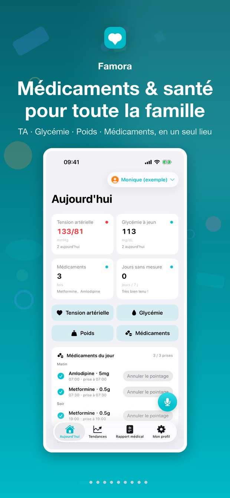
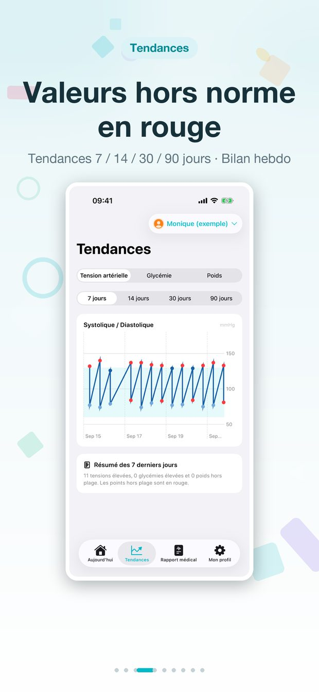
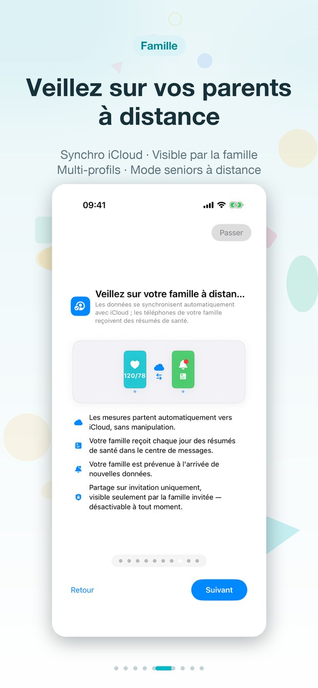
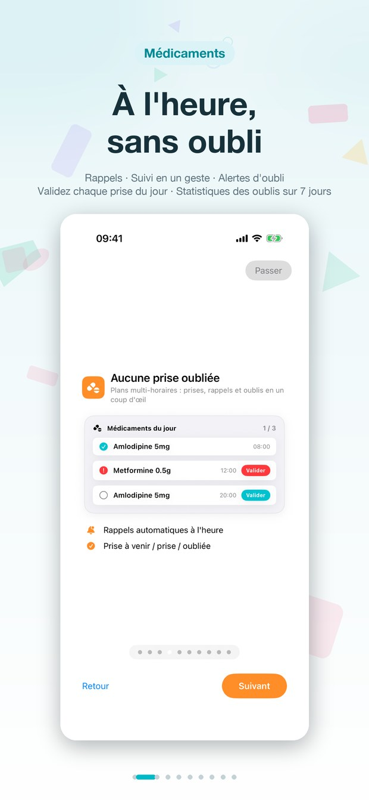
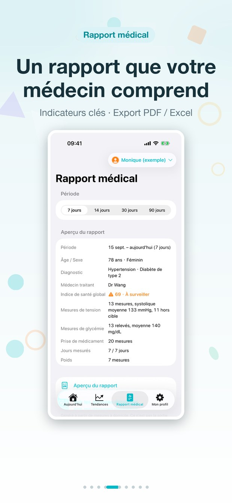
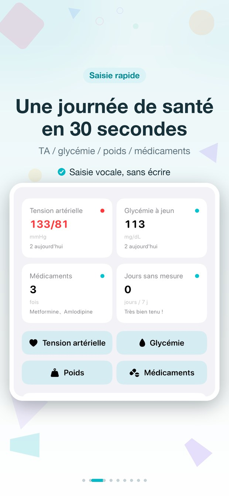

Tension · Glycémie · Poids · Médicaments — un journal de santé simple pour les aînés, clair pour la famille.



Notez les mesures, ne manquez aucune prise et partagez un rapport prêt pour le médecin en quelques secondes.
Tension, glycémie et poids du jour avec des couleurs d'état claires : un seul écran, rien de caché.
Tendances sur 14/30/90 jours pour chaque mesure : repérez les changements avant qu'ils ne deviennent des problèmes.

Horaires quotidiens avec cases cochées et taux d'observance ; les prises oubliées sautent aux yeux.

Rapports PDF de 14/30/90 jours prêts pour le médecin, et export des données brutes en Excel : partagez avec le médecin et la famille.

Notez une journée entière en 30 secondes : tension, glycémie, poids et médicaments en un geste — saisie vocale prise en charge.
Les mesures sont envoyées vers iCloud automatiquement : la famille voit les derniers chiffres dès l'ouverture de l'app.
Un journal simple pour les parents — un tableau de bord clair pour la famille.
Aucune synchronisation manuelle : les nouvelles mesures arrivent seules chez la famille.
Les proches reçoivent un résumé quotidien : mesures du jour, prises validées et points à surveiller.
Un seul rappel discret le soir si la mesure du jour n'a pas été faite — sinon, silence.
Notez vos mesures directement au poignet, avec des complications pour un aperçu rapide.
Un profil indépendant pour chaque membre de la famille : données, tendances et rapports séparés.
Sans compte, sans serveur, sans publicité. Tout ne vit que dans votre base de données iCloud privée.
Tout ce que vous voulez savoir sur les données, les comptes et les achats.